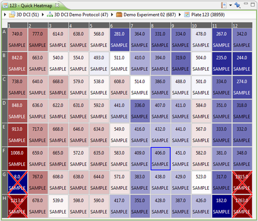

Whenever you select a plate (for example, in the Plate Browser), you can quickly see what the plate looks like by right-clicking on the plate and selecting Show Quick Heatmap. The Quick Heatmap shows the contents of the currently selected plate, and will update if you select another plate. The barcode of the currently selected plate is shown in the title bar of the Quick Heatmap.
Like most views, the Quick Heatmap can be frozen by using the pin button and can be added to a report by using the report button in the top right corner.

The layers that are enabled by default, are:
- Heatmap layer: gives each well a distinct color depending on the feature value and the feature's color method.
- Value layer: prints one or more lines of text on each well. By default, this is the feature value and the well type.
- Status layer: prints status symbols on wells that have a specific status, for example a cross for rejected wells.
Other layers that can be enabled, include:
- Image layer: shows the image that corresponds to each well.
- Dose-response curve: if the well contains a compound, displays the dose-response curve for the currently selected feature (see Feature Selector).
- Chart layers: many types of charts can be shown on top of the heatmap: histograms, 2D or 3D scatter plots, density plots, ...
To enable or disable layers, right-click on the heatmap and select Layers. A list of available layers will be shown. To configure a particular layer, right-click on the heatmap, and select the appropriate Configure item.
The figure belows shows a few examples of heatmap layers:

The Quick Heatmap is fully interactive, meaning that you can select wells in it and perform a number of actions on them, including:
- Validating wells
- Opening other views on the currently selected wells
- Triggering a plate recalculation
For more information about the possible actions within the Quick Heatmap view, refer to the Plate Editor topic.